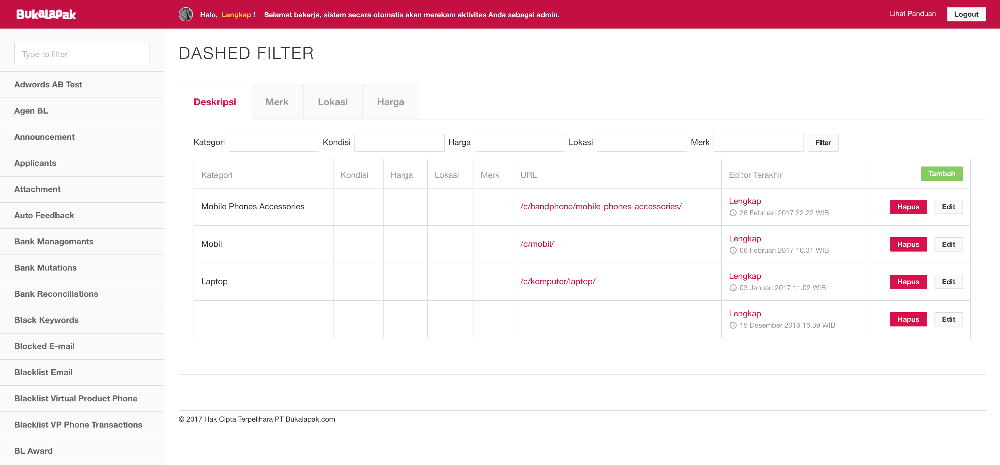

Bukalapak
Bukalapak.com is one of the biggest Indonesian online marketplace. It provides a platform for anyone to buy and sell almost anything.
I am in charge of front-end development for Bukalapak since 2012 and I have been involved in developing almost every part of Bukalapak’s user interface. Currently I am in charge of Bukalapak’s product interface, from discovering them to adding them to cart.
In addition to that, I am also responsible for developing and maintaining Bukalapak’s styleguide, and Bukalapak’s internal tool interface.
Bukalapak Styleguide
Bukalapak Admin Dashboard
